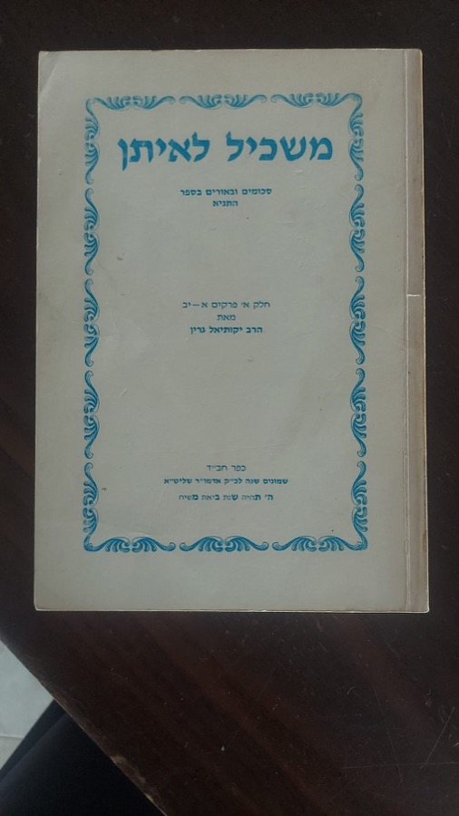
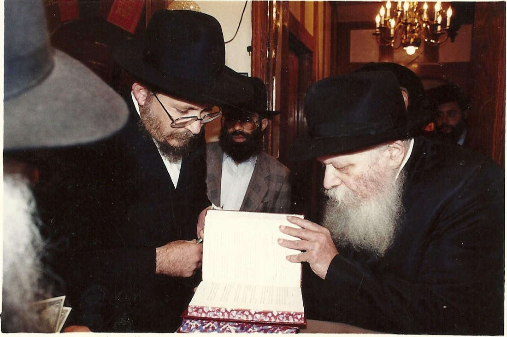

ילדות ונעורים
הרב יקותיאל גרין נולד ברמת גן בי"ד בכסלו תש"ד, לאביו ר' דוד משה גרין ולאמו מרת שרה. כילד למד בתלמוד תורה בכפר חב"ד.
כבר כילד הכיר את ההתוועדויות של חב"ד. בגיל עשר נסע עם אביו לי"ט כסלו בכפר חב"ד, בעגלה. אוטובוסים עוד לא היו.
בגיל 17 בערך, כשגר עדיין ברמת גן, החליט שגם לעיר שלו מגיעה סוכה מרכזית. הוא הלך לביתו של ראש העיר וקיבל אישור, ועד כניסת החג עמדה במרכז רמת גן סוכה כשרה. זו הייתה הסוכה הראשונה מסוגה בעיר.
שנות הלימוד
- בתחילהלמד בישיבת הדרום ברחובות.
- תשכ"בבעידודו של הרבי עבר לישיבת תומכי תמימים בלוד.
- תשכ"דהפליג באונייה ללמוד בישיבת תומכי תמימים המרכזית ב-770, בשנת ה"קבוצה".
הבית בכפר חב"ד
הוא נשא לאישה את מרת רחל, בתו של הרב בנימין לוין, ובהוראת הרבי קבע את ביתו בכפר חב"ד. אחרי החתונה למד בכולל, ואחר כך לימד בישיבה בלוד.
בכפר חב"ד לימד בבית הספר למלאכה, ובמשך תקופה גם ניהל את סמינר "בית רבקה". הוא היה משפיע של אנ"ש בכפר, וניהל גמ"ח כספים שעזר לאנ"ש מכל רחבי הארץ.
כך נולד "משכיל לאיתן"
הספרים הרבים של הרב גרין התחילו בכיתה, מול התלמידים בבית הספר למלאכה.

כך יצאה בשלהי תשמ"ב חוברת הביאורים הראשונה על התניא, בשם "משכיל לאיתן". היא כללה את שנים עשר הפרקים הראשונים של ליקוטי אמרים, ונשלחה לרבי.
מכתב התשובה של הרבי, מה' אלול תשמ"ב, כינה את החוברת "דבר בעתו", והציע להתייעץ עם זקני המשפיעים שלמדו תניא בתומכי תמימים בפולין. המשפט שבסוף המכתב נהיה לשליחות של כל חייו:
"הוסיף בהפצת המעינות, ואשרי חלקו, ויוסיף בכיוון זה"מתוך מכתב הרבי, ה' אלול תשמ"ב
הדרך שבה כתב
כדי לכתוב את "משכיל לאיתן" למד הרב גרין אין ספור ספרי חסידות, ואסף מתוכם את הפירושים.
היו נושאים עמוקים במיוחד, שדרשו הבנה של דקויות בעניינים רוחניים נעלים, ובהם נתקל בקשיים.
הוא אהב לכתוב בעט פרקר.
ספר אחר ספר, אל הרבי
כל ספר שהושלם בסדרה נמסר לרבי באופן אישי, בידי הרב גרין או בידי אחד מבני המשפחה, והרבי המשיך לעודד ולברך.

כך התווסף ספר לספר: לקוטי אמרים, שער היחוד והאמונה, אגרת התשובה, אגרת הקודש וקונטרס אחרון. "משכיל לאיתן" היא סדרה של 22 כרכים, שמבארת את ספר התניא בצורה בהירה ומעמיקה. היא התחילה באלול תשמ"ב, ונכתבה במשך עשרות שנים.
"חסידות לעם"
חוץ מ"משכיל לאיתן" הוציא הרב גרין לאור עשרות ספרי חסידות עם ביאורים: מאמרי רבותינו נשיאינו מבוארים, סדרת "אהבת ישראל", ספרים על חינוך ועל תיקון המידות, "התפילין במשנת חב"ד", "תניא לילדים", ביאור על "סדר ברכת הנהנין" של אדמו"ר הזקן, וספרי העשרה לתניא. חלק מהביאורים תורגמו גם לאנגלית.
את "הגדה של פסח עם מנהגי חב"ד" הדפיס לראשונה בשנת תשמ"ו, והרבי נתן את הערותיו וברכתו להוצאתה.
שני ספרים היו קרובים במיוחד ללבו. הוא ביקש שעל המצבה שלו ייכתבו "משכיל לאיתן" ו"ברכות הנהנין".
הסתלקותו
הרב יקותיאל גרין נפטר בב' באדר א' תשפ"ב, בגיל 78, ונטמן בבית העלמין אחיעזר. הוא הותיר אחריו את בנו ר' בנימין, ואת בנותיו מרת חנה קורנט, מרת נחמה ליברוב ומרת לאה פרידמן, נכדים ונינים.
הספרים שלו ממשיכים ללמד, בבתים, בשיעורים ובקבוצות "היום בתניא", בדיוק בכיוון שהרבי כתב לו: "ויוסיף בכיוון זה".